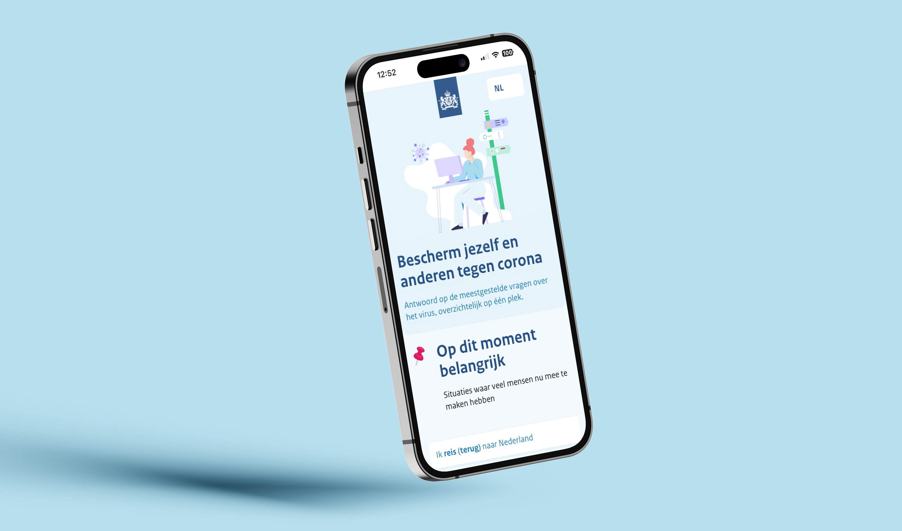
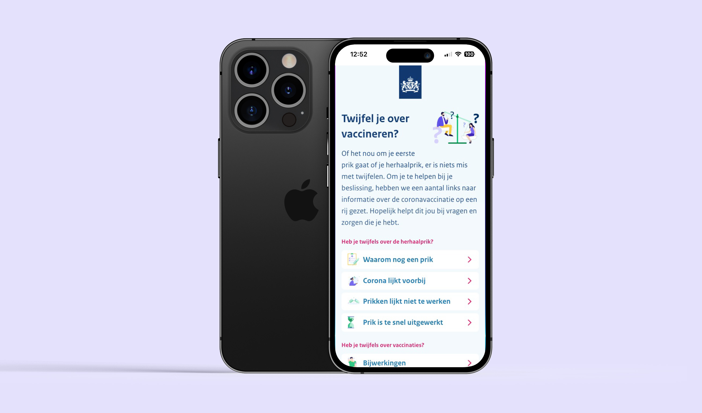
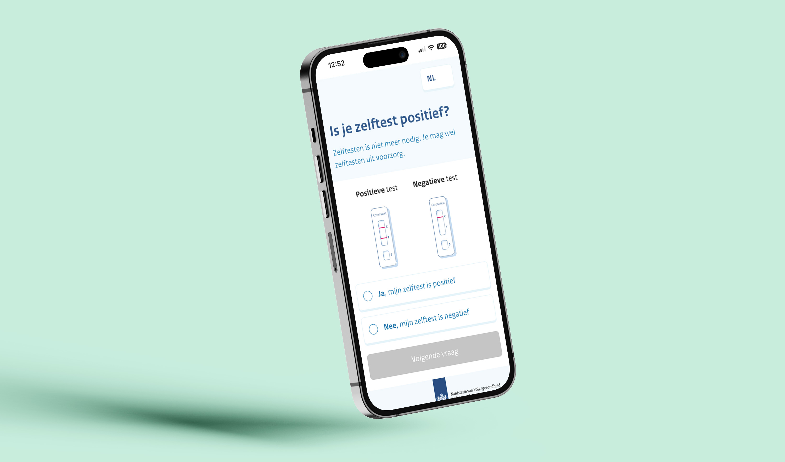
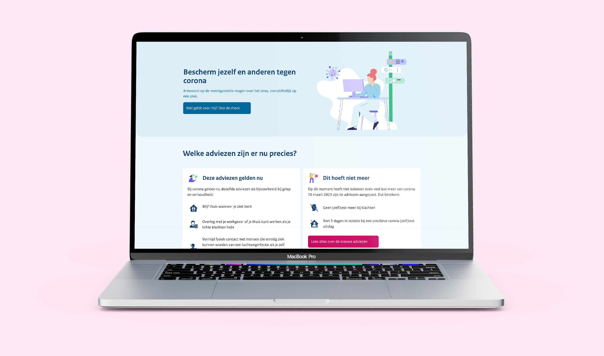

Introduction
We have all experienced the vast impact of the corona pandemic that started at the end of 2019. On a global and a national scale, governments took measures to ensure the safety of citizens. People's daily lives were very much influenced as well. What to do when someone you have visited ended up being infected? What if you are worried about the effects of vaccination? In a time of quickly changing rules and doubts about vaccination, the Dutch Ministry of Health, Welfare and Sport wanted to create helpful tools to inform citizens and help them to decide what would be best to do in their unique situation.
During this project, I worked at Total Design and collaborated with various other agencies and professionals. It was very much an interdisciplinary project, created by UX Researchers, Designers with various specialisations, developers, communication specialists, policy makers, design strategists and civil servants.
The design challenge
This project was all about informing and aiding civilians in these trying times. How can we create a central digital service to inform and guide everyone around the topic of the corona pandemic in the Netherlands?
When I started working on this project, various parts of the service were already in development. However, there was still room for further development, driven by a strong motivation to create the best guidance for citizens in these uncertain times. There were a couple of main themes that were important for this project, such as:
- Quarantine (what to do when...)
- Traveling (what should I do when traveling to or from...)
- Vaccination (where can I get vaccinated without an appointment?)
- General information regarding the corona virus (is vaccination safe?)
- Documents such as the quarantine declaration
Accessibility was immensely important for this project. The pandemic hit everyone, which made it crucial to create a clear, well-designed and accessible service. Accessibility was kept in mind for every part of the project, from using the correct web standards in the code and making sure color contrasts were strong enough for good visibility, to using accessible language. Furthermore, the designs had to be clean, easy to scan and intuitive, in order to reduce cognitive load. The team worked hard to ensure that all of this was realised.
The process
As stated before, this project posed a couple of challenges, such as working together with a wide variety of disciplines from various organisations and making sure the service was accessible to such a wide audience.
In collaboration with the other agencies, user research was conducted. Feedback was continuously being gathered, and research methods such as prototype testing were used in order to improve the designs. The subject matter around the corona virus was a sensitive and complicated topic, which further underlined the importance of researching how we could best aid the users. As a UX Designer, I prepared prototypes, translated the findings of various research endeavours into the designs and was an advocate for the end users.
Another challenge during this project was the complicated nature of the content we had to work with. The guidelines around the virus could sometimes change relatively quickly, and there were many unique situations that could happen during the pandemic. People were easily confused about what they should do when, for instance, they had visited someone who was infected, or if they belonged to a group that was more prone to get very ill from the virus. To tackle this, digital questionnaires/flows were created, which could swiftly lead the user to a page with advice on what to do in their situation, so that they knew what to do and could feel sure of themselves. These flows were quite intricate and had to be thought out well, which was a fun challenge.
The end result
In the end, a solid digital service around the corona virus in the Netherlands was created, built on a design system that we had developed. The service guided people around subjects such as quarantine, vaccination and doubts around corona. Furthermore, an interactive map with vaccination locations where citizens could get a jab without an appointment was developed. The creation of the design system for this project was quite fun (and rewarding) to do. As a UX designer with experience in illustration, I added additional illustrations to the design system and finetuned others, as I believe that using illustrations can be a helpful part of communication. Some elements are more scannable when an illustration is added, and messages can become more clear. Furthermore, a nice visual style with clear and fitting illustrations can even make the design more enjoyable to use!
What I learned
This was a very rewarding and fun project to work on, with many challenges. Creating these digital tools together with such a wide variety of collaborators was very interesting and also required clear communication and good stakeholder management. I never worked with such a wide variety of professionals before, and it was a fun and exciting experience. My skills around design systems and interactive components (with animations) in Figma grew even more throughout this project, and I learned a lot from the ways of working and specialisations of other collaborators. The challenge of creating clear, interesting designs based on 'dull' subject matter such as government policies was a fun challenge as well; how do we keep things human and accessible? This user-centered focus was an important aspect of why this project suited me well. I am very glad to have worked on this project!
For more information about the work Total Design did for the Dutch Ministry of Health, Welfare and Sport, please have a look at Total Design's website.
Tools
I mainly used Figma for this projects' designs.